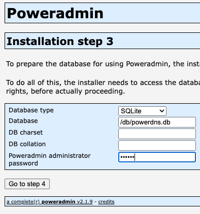

Note: This documentation is still in progress, not reviewed properly, and might contain some errors or outdated images. It's intended for the upcoming 4.0.0 release, so configuration settings might be different from previous versions.
SQLite Configuration Guide for Poweradmin
Overview
This guide explains how to configure Poweradmin to use SQLite as your database backend.
Requirements
- PHP with PDO SQLite extension enabled
- Write permissions on the directory where the SQLite database will be stored
Configuration Steps
- Create a configuration file at
/config/settings.phpbased on the example below:
<?php
/**
* Poweradmin SQLite Configuration
*/
return [
/**
* Database Settings
*/
'database' => [
'type' => 'sqlite', // Set database type to SQLite
'file' => '/path/to/your/poweradmin.sqlite', // Absolute path to SQLite database file
'host' => '', // Not used for SQLite
'port' => '', // Not used for SQLite
'user' => '', // Not used for SQLite
'password' => '', // Not used for SQLite
'name' => '', // Not used for SQLite
'charset' => 'utf8', // Character set
'debug' => false, // Set to true to debug SQL queries
],
// Other configuration sections remain the same as in settings.defaults.php
];
-
Ensure the directory containing the SQLite database file has appropriate permissions:
- The web server user (e.g., www-data, apache, nginx) needs read/write access to both the directory and database file
-
Initialize your database structure using the appropriate SQL file:
- Use
sql/poweradmin-sqlite-db-structure.sqlfor a new installation - For upgrades, use the appropriate upgrade script from the
sql/directory
- Use
Database Initialization
You have two options to initialize a new SQLite database:
Option 1: Manual Setup
# Create the database file
touch /path/to/your/poweradmin.sqlite
# Set proper permissions
chmod 664 /path/to/your/poweradmin.sqlite
chown www-data:www-data /path/to/your/poweradmin.sqlite # Replace with your web server user
# Import the schema
sqlite3 /path/to/your/poweradmin.sqlite < /path/to/poweradmin/sql/poweradmin-sqlite-db-structure.sql
Option 2: Using the Automated Script
You can use the provided script from the Poweradmin repository: https://github.com/poweradmin/poweradmin-scripts/blob/master/create_sqlite_db.sh
Running the Installer
After creating your SQLite database, run the Poweradmin installer and select SQLite as the database type, then provide the full path to your database file:

When the installation is complete, copy the generated configuration to inc.config.php: